2019
TrkC-Targeted Kinase Inhibitors and PROTACs
B. Zhao and K. Burgess
Mol. Pharm., 2019, 16, 4313-4318
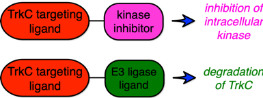
B. Zhao and K. Burgess
Mol. Pharm., 2019, 16, 4313-4318
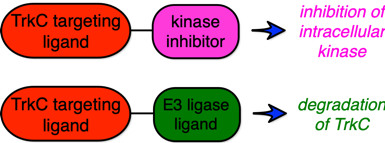
Cyanine-Gemcitabine Conjugates as Target Theranostic Agents for Glioblastoma tumor Cells
Z. Jiang, K. Pflug, S. M. Usama, D. Kuai, X. Yan, R. Sitcheran, K. Burgess
J. Med. Chem., 2019, 62, 9236-9245
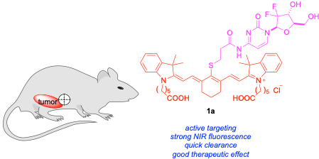
Z. Jiang, K. Pflug, S. M. Usama, D. Kuai, X. Yan, R. Sitcheran, K. Burgess
J. Med. Chem., 2019, 62, 9236-9245
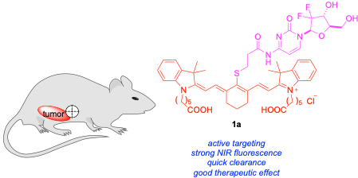
Conjugations of Dasatinib With MHI-148 Has a Significant Advantageous Effect in Viability Assays for Glioblastoma Cells
S. M. Usama, Z. Jiang, K. Pflug, R. Sitcheran, K. Burgess
ChemMedChem, 2019, 14, 1575-1579
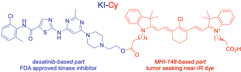
S. M. Usama, Z. Jiang, K. Pflug, R. Sitcheran, K. Burgess
ChemMedChem, 2019, 14, 1575-1579
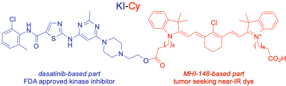
Protein labelling and albumin binding characteristics of the near-IR Cy7 fluorophore, QuatCy
S. Thavornpradit, S. M. Usama, C.-M. Lin, K. Burgess
Org. Biomol. Chem., 2019, 17, 7150-7154
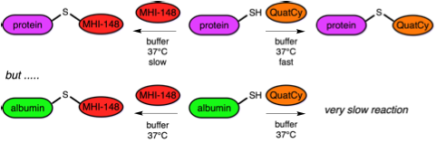
S. Thavornpradit, S. M. Usama, C.-M. Lin, K. Burgess
Org. Biomol. Chem., 2019, 17, 7150-7154
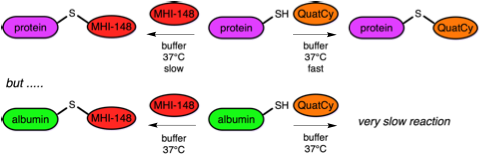
Productive Manipulation of Cyanine Dye π-Networks
S. M. Usama, T. Thompson, K. Burgess
Angew. Chem. Int. Ed., 2019, 28, 2-5
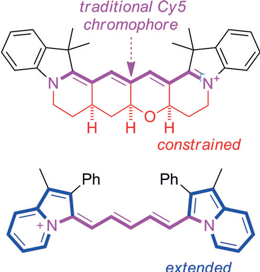
S. M. Usama, T. Thompson, K. Burgess
Angew. Chem. Int. Ed., 2019, 28, 2-5
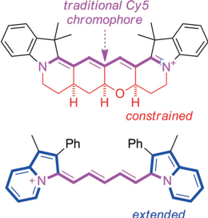
Correlations between secondary structure- and protein–protein interface-mimicry: the interface mimicry hypothesis
J. Taechalertpaisarn, R.-L. Lyu, M. Arancillo, C.-M. Lin, L. Perez, T. Ioerger, K. Burgess
Org. Biomol. Chem., 2019, 17, 3267-3274
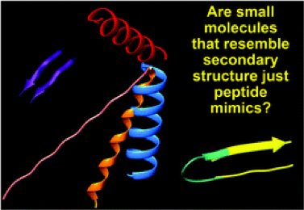
J. Taechalertpaisarn, R.-L. Lyu, M. Arancillo, C.-M. Lin, L. Perez, T. Ioerger, K. Burgess
Org. Biomol. Chem., 2019, 17, 3267-3274
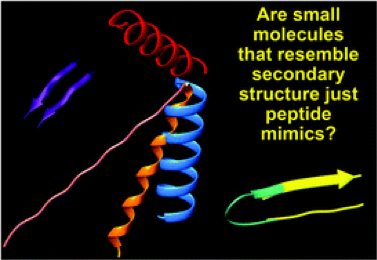
A Near‐Infrared Fluorescence Chemosensor Based on Isothiocyanate‐Aza‐BODIPY for Cyanide Detection at the Parts per Billion Level: Applications in Buffer Media and Living Cell Imaging
P. Piyanuch, J. Sirirak, A. Kamkaew, O. Weeranantanapa, V. Promarak, K. Burgess, N. Wanichacheva
ChemPlusChem, 2019, 84, 252-259

P. Piyanuch, J. Sirirak, A. Kamkaew, O. Weeranantanapa, V. Promarak, K. Burgess, N. Wanichacheva
ChemPlusChem, 2019, 84, 252-259
Design criteria for minimalist mimics of protein–protein interface segments
J. Taechalertpaisarn, R.-L. Lyu, M. Arancillo, C.-M. Lin, Z. Jiang, L. Perez, T. Ioerger, K. Burgess
Org. Biomol. Chem., 2019, 17, 908-915
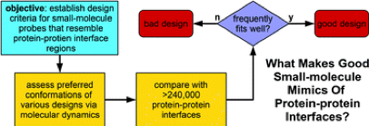
J. Taechalertpaisarn, R.-L. Lyu, M. Arancillo, C.-M. Lin, Z. Jiang, L. Perez, T. Ioerger, K. Burgess
Org. Biomol. Chem., 2019, 17, 908-915
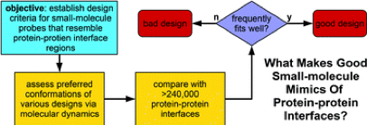
PROTACs suppression of CDK4/6, crucial kinases for cell cycle regulation in cancer
B. Zhao, K. Burgess
Chem. Commun., 2019, 55, 2704-2707
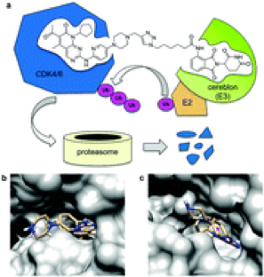
B. Zhao, K. Burgess
Chem. Commun., 2019, 55, 2704-2707
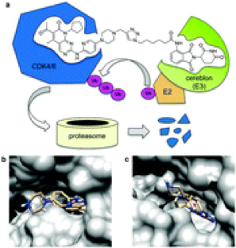
QuatCy: A Heptamethine Cyanine Modification With Improved Characteristics
S. Thavornpradit, S. M. Usama, J. P. Shrestha, G. K. Park, H. S. Choi, K. Burgess
Theranostics, 2019, 9, 2856-2867

S. Thavornpradit, S. M. Usama, J. P. Shrestha, G. K. Park, H. S. Choi, K. Burgess
Theranostics, 2019, 9, 2856-2867
A Near-IR Fluorescent Dasatinib Derivative That Localizes in Cancer Cells
S. M. Usama, B. Zhao, K. Burgess
Bioconjugate Chem., 2019, 30, 1175-1181
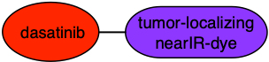
S. M. Usama, B. Zhao, K. Burgess
Bioconjugate Chem., 2019, 30, 1175-1181
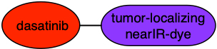